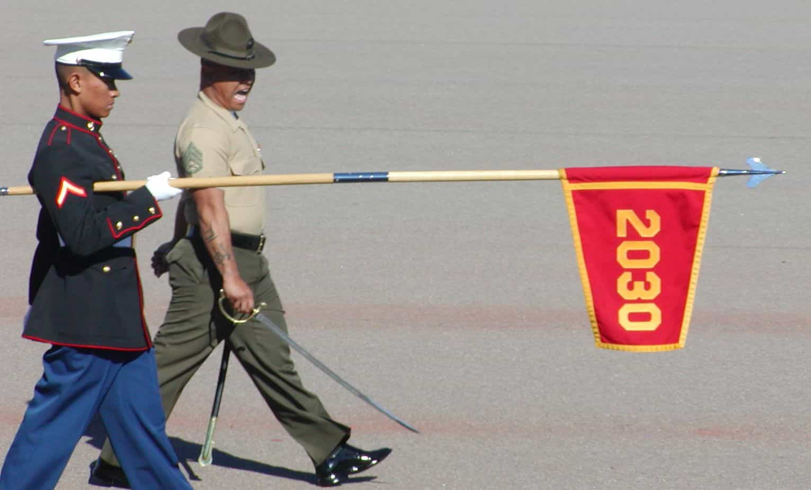
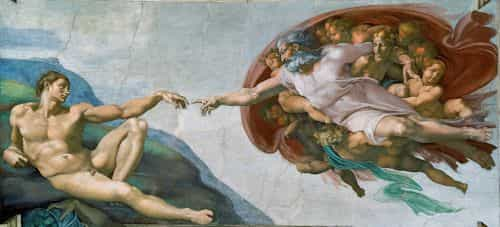

Return Of Kings’ focus is the return of masculine men. But there is dissent about what masculinity actually is. Men of all kinds write about women, guns, sexual conquest, and politics. ROK has something to infuriate and delight any man, but it’s hard to sort through.
So lets shove aside the clutter and get to the core of the matter, starting with masculinity. What is it? What does it look like? Can we measure it? Where does it come from? Pretty soon we’re diving right back into the same old pile of dreck we just shoved aside. Let’s not.
I submit that we need something bolder and simpler than mere masculinity. We need a return to manhood.
Manhood
Manhood is the sum total of the characteristics of a man. To a child, manhood looks like daddy. To a woman, manhood is strength and security. To a young lady, manhood appears dangerous, risky, but compelling in some strange way. In an elder, manhood shows as composure, patience and wisdom. To a community, manhood is honesty, trust, and leadership. In a warrior, manhood is strength and discipline in peace time; fierce courage in battle. Manhood is singular but takes on many forms.
Manhood isn’t learned, it’s grown. Something or someone outside of himself is necessary for a boy to achieve manhood. He doesn’t do this on his own.

The progress of a male baby from infancy to manhood hits many obstacles. Some get further along than others and many never make it at all. The failures become mere adults, great big boys. Others are stalled out partway along but no longer moving: part man and part boy in a large body. This is confusion!
Transition
As he approaches manhood, a boy often experiences a defining moment where he leaves his childhood behind and becomes a man. Call it red-pilling if you want, but it’s more of an epiphany.
For me, this occurred around age fifteen on a wet horse as a cold driving rain turned into blowing snow while we climbed up beyond the timber line. The horses had ice in their manes and snow dusted the mules. Night was coming and I was cold. With many hours ahead before we reached camp, I was in trouble.
My dad was further back, behind the pack mules, and I could just make him out as I turned to ask for help. Only after he told me he had already given his foul weather gear to my younger brother did I see that he was shivering violently. I turned back and I knew that I had to tough it out alone. Dad had already given his all. It was up to me, and I was ready.
Since then, I’m rarely without proper gear and I’ve never forgotten that moment. I’ve since shivered myself after giving gear to a woman or child, because that’s what men do. That’s who we are.
In the closing pages of Stephen Crane’s Red Badge of Courage are these moving lines:
He felt a quiet manhood, non-assertive but of sturdy and strong blood… He had been to touch the great death, and found that, after all, it was but the great death. He was a man.
Not every man experiences such a sudden transformation, but men know the difference between what they were and what they are.
The process of obtaining manhood is mysterious and clouded, but the end result is obvious to everyone. Nobody can grant manhood. No one issues certificates of completion. Manhood is simply observed and accepted. It’s easily recognized by anyone who cares to look.
Uh-Oh… Now What?
But what is so easily recognized is not so easily faked. Males who grow up without achieving manhood try to act the part.
You know them. They’re confused. They go this way and that and get nowhere. They have no compass and are unpredictable. They talk loudly about their exploits but they’re stagnant. They’re lions around women and children, pussy cats around men. Their kids sneak around behind them. Their women laugh at them. They want to be seen as real men but they’re clueless. They think their manhood is between their legs.
Thinking about the journey from diapers to manhood hearkens back to what I wrestled with years ago as I tried to understand how one obtained spiritual righteousness. I was distracted by outward stuff crowding out the solution. Eventually, I learned that spiritual righteousness doesn’t come from righteous acts (religion), but from a relationship with our Creator.
The journey to manhood is like that. It’s a mystery if you try to force it, but it comes naturally if you let it happen. Both spiritual righteousness and manhood are easily and often faked, but the genuine is obvious.
Solution

So I submit that the journeys to manhood and spiritual righteousness are similar. Both require a relationship with the Creator for success, but at different times. The journey to manhood requires a relationship with the Creator for completion. Spiritual righteousness requires it at the beginning.
One whose journey has stalled out will go nowhere until that relationship is restored. And this makes sense. How else could manhood be achieved, except through the One who created man in his own image? If full manhood is to be restored, it’s going to start with this relationship.
Read More: The Importance Of Mythology To Manhood